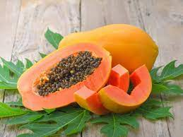
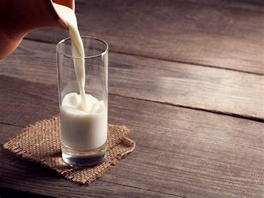
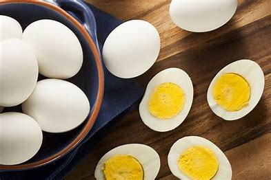
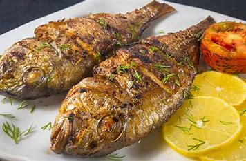

Malaria
Malaria is a disease caused by a parasite. The parasite is spread to humans through the bites of infected mosquitoes. People who have malaria usually feel very sick with a high fever and shaking chills.
What are the symptoms of Malaria?
Signs and symptoms of malaria may include:
- Fever
- Chills
- General feeling of discomfort
- Headache
- Nausea and vomiting
- Diarrhea
- Abdominal pain
- Muscle or joint pain
- Fatigue
- Rapid breathing
- Rapid heart rate
- Cough
How Malaria is treated?
Malaria is treated with prescription drugs to kill the parasite. The types of drugs and the length of treatment will vary, depending on:
- Which type of malaria parasite you have
- The severity of your symptoms
- Your age
- Whether you're pregnant
Food to add to your diet
The following points to be consider in nutritional planning for malarial patient.
- 1.Fever is an essential aspect:
- Fever increases body metabolic rate (BMR), thus calorie requirements are increased. The calorie requirement depends on degree rise of temperature.
- 2.Keep a check on the protein intake:
- The requirement of protein is increased as there is a massive tissue loss. A high protein with high carbohydrates diet is helpful in protein utilization for anabolic and tissue building purposes.
- 3.Control your fats intake:
- Control your fats intake-Fats intake should be in moderation. The uses of dairy fats like butter, cream, fats in milk products, etc are helpful in digestion as they contain medium chain triglycerides (MCT).
- 4.Work on your vitamins:
- it. Vitamin A and Vitamin C rich foods such as carrot, beetroots, papaya, fruits especially citrus fruits (e.g. orange, mausambi, pine apple, grapes, berries, lemon, etc), with vitamin B complex are very useful to boost immunity.
- 5.Load up on fluids:
- Liberal fluid intake is desired to compensate for the fluid losses from the body. A daily fluid intake of 3 to 3.5 liters is recommended.
Foods to avoid
1.A high fibre foods such as whole grain cereals, green leafy vegetables, thick skin fruits, etc2.Fried foods, processed foods, junk foods, oily and spicy foods, pickle, etc
3.Excess intake of tea, coffee, cocoa and other caffeinated beverages, etc.
How to prevent ourselves from Malaria?
- Cover your skin.
- Apply repellent to clothing.
- Apply insect repellent to skin.
- Sleep under a net.
Diet to follow:

Sugarcane Juice

Papaya
Coconut Water
Butter

Milk

Eggs
Pine Apple

Fish
Medicines
1. Chloroquine phosphate .
2.Artemisinin-based combination therapies (ACTs) .
3.Primaquine phosphate.